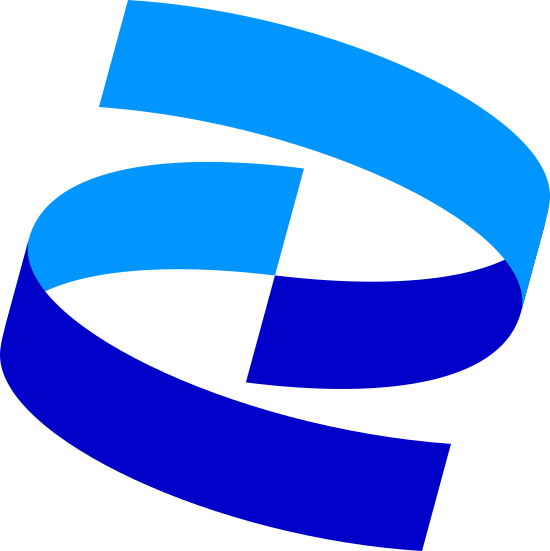

Work
🔐

Travelers Insurance
Enterprise
Design Standards
GenAI
Full case study
🔐

Pfizer
Healthtech
Patient Experience
Full case study
🔐

Publicis × Stellantis
AI/ML
Enterprise
Innovation
Full case study
Publicis Sapient
Verizon +play
Marketplace
Subscriptions
Full case study
Boston Consulting Group
Consulting
Leadership
Strategy
Full case study
Cole Haan
E-commerce
Retail
Mobile
Full case study

PricewaterhouseCoopers
Enterprise
Digital
Transformation
Full case study
Spotify
Consumer
Music
Personalization
Full case study
Prova
Education
Music
Mobile
Full case study
Craft
Marketplace
Mobile-First
Branding
Full case study
Mirror
E-commerce
Fashion
Responsive
Full case study